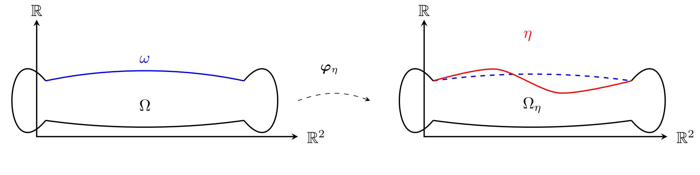

Bio
Mathematician by accident. It's been a complicated, mostly unrequited relationship ever since — I only blame bad initial conditions.
About Me
I am a Research Assistant at the Universität Duisburg–Essen, where I study the analytical aspects of Partial Differential Equations (PDEs) with a focus on mathematical Fluid–Structure Interaction (FSI). My research aims to understand how coupled systems of fluids and elastic structures behave, particularly in compressible flow settings.
My academic journey began at the African Institute for Mathematical Sciences (AIMS) — Cameroon, part of a pan-African network of excellence, where I obtained my first Master’s degree in Mathematics. Afterward, I joined a research group working on population genetics and mathematical biology. However, in a twist worthy of Darwin’s own theory of fitness, I dropped out after a year and a half — evidently, I wasn’t the fittest for survival in that ecosystem (or perhaps just too lazy to evolve further). Yet that experience taught me resilience and the value of choosing the path that truly resonates with me — a reminder I like to summarize with a simple motto: illegitimi non carborundum.
I later joined the Berlin Mathematical School (BMS) and completed a second Master’s degree in Mathematics at Humboldt University of Berlin, focusing on Optimal Control of PDEs. That experience rekindled my interest in analysis and applied mathematics, eventually leading me toward my current work on fluid–structure interaction problems.
What draws me to this area is the balance between abstract theory and real physical intuition — how rigorous mathematics can describe complex mechanical phenomena. Beyond research, I’m deeply interested in teaching and communicating mathematics. I run the YouTube channel @MathXploreInfinity, where I share accessible lectures on advanced mathematical topics.
Research
I work on the mathematical analysis of fluid–structure interactions (FSI) and related PDE systems. A current focus is barotropic compressible fluid–viscoleastic shell interactions and local well-posedness questions.
Model description
We consider the interaction of a compressible fluid and a flexible shell, where the shell occupies a portion of the boundary of a fixed reference domain $\Omega \subset \mathbb{R}^3$. As the shell deforms, the fluid domain $\Omega$ transforms into the time-dependent deformed domain $\Omega_{\eta(t)}$ (see the figure below). The transversal deformation of the shell is described by
$$\eta : (t,\mathbf{y}) \in I \times \omega \;\longmapsto\; \eta(t,\mathbf{y}) \in \mathbb{R}, \quad I = [0,T), \; T>0,$$
where $\omega \subset \mathbb{R}^2$ represents the shell’s mid-surface. The mapping $\boldsymbol{\varphi}_{\eta} : \omega \to \partial\Omega_{\eta}$ parametrizes the boundary of the deformed domain. The outward unit normals to the reference and deformed configurations are denoted by $\mathbf{n}$ and $\mathbf{n}_{\eta}$, respectively.
The shell dynamics are governed (schematically) by a Koiter-type equation:
$$\rho_s\,\partial_{tt}\eta + \mathcal{K}\eta + \mathcal{D}\,\partial_t\eta = - \mathbf{n}^\intercal \big(\sigma(\mathbf{v},\rho)\,\mathbf{n}_{\eta}\big)\circ\boldsymbol{\varphi}_{\eta} \mathrm{det}\big(\nabla\boldsymbol{\varphi}_{\eta}\big) \quad \text{on } \omega,$$
where $\rho_s$ is the surface density of the shell, $\mathcal{K}$ represents the elastic operator, $\mathcal{D}$ a structural damping term, and $\sigma(\mathbf{v},\rho)$ denotes the Cauchy stress tensor of the fluid. The right-hand side expresses the normal component of the fluid traction acting on the shell. Periodic boundary conditions in space are assumed.
Fluid equations
In the moving domain $\Omega_{\eta}(t)$, the motion of the barotropic compressible fluid is described by the compressible Navier–Stokes system:
$$\begin{aligned} &\text{(Continuity equation)} && \partial_t \rho + \nabla\!\cdot(\rho \mathbf{v}) = 0,\\[4pt] &\text{(Momentum equation)} && \partial_t(\rho \mathbf{v}) + \nabla\!\cdot(\rho \mathbf{v}\otimes \mathbf{v}) = \nabla\!\cdot \sigma(\mathbf{v},\rho), \end{aligned}$$
where the Newtonian rheological law gives the stress tensor as $$\sigma(\mathbf{v},\rho) = \mu\big(\nabla\mathbf{v}+(\nabla\mathbf{v})^\intercal\big) +\lambda\left(\nabla\cdot\mathbf{v}\right)\mathbb{I}_{3\times 3} - p(\rho)\mathbb I_{3\times 3},$$ with viscosity coefficients $\mu > 0$, $3\lambda + 2\mu \ge 0$. The pressure follows the barotropic law $p(\rho) = a\rho^{\gamma}$, with $a>0$ and adiabatic exponent $\gamma > 1$.
The coupling between the fluid and the shell is enforced through the kinematic boundary condition on the fixed interface $\omega$: $$\mathbf{v}\circ\boldsymbol{\varphi}_{\eta} = \left(\partial_t \eta\right) \mathbf{n},$$ which ensures that the normal component of the fluid velocity coincides with the velocity of the shell.
Analytical goal
A central question concerns the well-posedness of this coupled PDE system: under what assumptions on the initial data, regularity, and physical parameters does the problem admit a unique local (or global) strong solution?
Beyond local existence, particular emphasis is placed on suitable continuation criteria ensuring that a local strong solution persists globally in time. In the spirit of Prodi–Serrin–Ladyzhenskaya type conditions, such criteria typically require quantitative bounds on key physical quantities—like the density or deformation gradient—to prevent breakdown and guarantee global regularity.
For further details, see my preprint: arXiv:2510.03936.

Publications
- Local well-posedness For Barotropic Compressible Fluid–Viscoelastic Shell interactions — under review (preprint: arXiv:2510.03936).
Teaching
I run a mathematics YouTube channel with advanced lectures presented in an accessible way. Topics include:
- Functional Analysis
- Optimal Control
- Calculus of Variations
- Stochastics
Channel: @MathXploreInfinity
Talks
- November 2024 — Oberseminar AG Mathematische Modellierung, TU Clausthal — ''Uncertainty Quantification in Optimal Control of Elliptic Quasi–Variational Inequalities” — slides
Contact
I am easily reachable by email. Invitations for talks, collaborations, consultations, or guidance are welcome.
ngougoue.pierre@aims-cameroon.org
Fakultät für Mathematik, Universität Duisburg–Essen, Thea-Leymann Straße 9, 45127 Essen, Germany